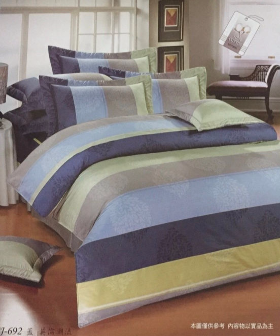
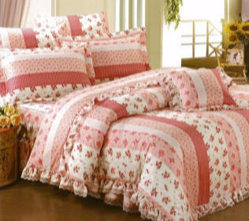

台製MIT純棉系列
英倫潮流-藍
5*6.2尺五件式床罩組
價格
商品特色
◆採用40支棉，220支紗高級精梳純棉布料，全程台灣製生產
◆內裡採用純棉直條紋車縫法製成，精緻又耐用，鬆緊帶保證緊實又耐用
◆裙擺為百摺裙擺，與床單同花色，絕不接素色布/或TC布料
◆採環保染劑印染，環保無毒性、無致癌物，不刺激皮膚、不褪色
◆採用包覆性良好的ㄇ字型鬆緊帶隱藏內束設計，不易滑動
◆鋪棉兩用被套設計，夏天可直接當涼被使用，冬天兩用被套再裝入被胎(如:羽絨被;蠶絲被;羊毛被)更可增加保暖效果;搭配精梳棉布料，柔軟舒適，吸濕排汗、透氣舒適


田園-紅
5*6.2尺五件式床罩組
商品特色
◆採用40支棉，220支紗高級精梳純棉布料，全程台灣製生產
◆內裡採用純棉直條紋車縫法製成，精緻又耐用，鬆緊帶保證緊實又耐用
◆裙擺為百摺裙擺，與床單同花色，絕不接素色布/或TC布料
◆採環保染劑印染，環保無毒性、無致癌物，不刺激皮膚、不褪色
◆採用包覆性良好的ㄇ字型鬆緊帶隱藏內束設計，不易滑動
◆鋪棉兩用被套設計，夏天可直接當涼被使用，冬天兩用被套再裝入被胎(如:羽絨被;蠶絲被;羊毛被)更可增加保暖效果;搭配精梳棉布料，柔軟舒適，吸濕排汗、透氣舒適